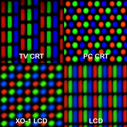
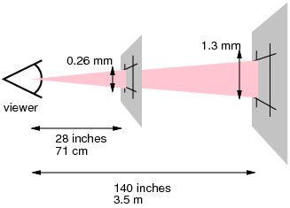

<!doctype html>
<html lang="en">
	<head>
		<meta charset="utf-8">
		<title>Responsive Web Design</title>
		<meta name="description" content="Responsive Web Design">
		<meta name="author" content="Olena Svietlova">
		<meta name="apple-mobile-web-app-capable" content="yes">
		<meta name="apple-mobile-web-app-status-bar-style" content="black-translucent">
		<meta name="viewport" content="width=device-width, initial-scale=1.0, maximum-scale=1.0, user-scalable=no, minimal-ui">

		<link rel="stylesheet" href="css/reveal.css">
		<link rel="stylesheet" href="css/theme/epam.css" id="theme">

		<!-- Code syntax highlighting -->
		<link rel="stylesheet" href="lib/css/zenburn.css">

		<!-- Printing and PDF exports -->
		<script>
			var link = document.createElement( 'link' );
			link.rel = 'stylesheet';
			link.type = 'text/css';
			link.href = window.location.search.match( /print-pdf/gi ) ? 'css/print/pdf.css' : 'css/print/paper.css';
			document.getElementsByTagName( 'head' )[0].appendChild( link );
		</script>

		<!--[if lt IE 9]>
		<script src="lib/js/html5shiv.js"></script>
		<![endif]-->
	</head>

	<body>

		<div class="reveal">

			<!-- Any section element inside of this container is displayed as a slide -->
			<div class="slides">

				<!-- SECTION 0 -->
				<section class="has-dark-background-custom" data-state="cover-page" data-background="img/lake-view.jpg" data-background-size="cover">
					
					<h1>Responsive Web Design</h1>
					<p><small>by Viacheslav Stetsenko</small></p>
				</section>

				<!-- SECTION 1 -->
				<section>
					<h2>What is Responsive Web Design?</h2>
					<aside class="notes">
						В двух-трех словах как бы вы описали, что такое РВД?
						It's a design and development approach
					</aside> 
				</section>

				<!-- SECTION 2 -->
				<section data-transition="fade">
					<h2>What problem does RWD solve?</h2>
					<aside class="notes">
						Desktop computers -> (1024х768) fixed layout, pixel perfect design
						Monitors of different resolution -> centered fixed layouts, flexible, elastic layouts
						Mobiles -> separate mobile site, m dot
						Tablets & smartphones -> third site???
					</aside>
				</section>

				<!-- SECTION 3 -->
				<section data-background="img/devices.jpg" data-background-size="cover">
				</section>

				<!-- SECTION 3 -->
				<section data-background="img/wanna-be-webdev.jpg" data-background-size="contain">
					<aside class="notes">
						I HEARD YOU WANT TO BE A WEB DEVELOPER
						HERE ARE A FEW DEVICES TO TEST YOUR SITE ON
					</aside>
				</section>

				<!-- SECTION 4 -->
				<section>
					<blockquote>
						The web has always been fluid; we’ve just wasted a good number of years forcing fixed pixels onto an inherently responsive framework.
					</blockquote>
					<p class="cite-author">Elliot Jay Stocks,<br/>Creative Director of Adobe Typekit</p>
					<aside class="notes">
						Create a new HTML document, add some content, don’t add any CSS, and view that document in a browser. What do you see?
					</aside>
				</section>

				<!-- SECTION 5 -->
				<section data-background="img/content-like-water.png" data-background-size="contain">
					<aside class="notes">
						Block elements have 100% width by default.
					</aside>
				</section>

				<!-- SECTION 6 -->
				<section data-background="img/ethan-web-event.jpg" data-background-size="contain">
					<aside class="notes">
						<h2>God father of RWD</h2>
						<a href="http://alistapart.com/article/responsive-web-design" target="_blank">05/2010 A List Apart article</a>
						One website with one URL and content that is resized and reorganized in response to different screen widths and/or other features.
					</aside>
				</section>

				<!-- SECTION 7 -->
				<section>
					<blockquote>
						Responsive design is not about ‘designing for mobile’. But it’s not about ‘designing for the desktop’, either.
						Rather, <strong>it’s about adopting a more flexible, device-agnostic approach</strong> to designing for the web.
					</blockquote>
					<p class="cite-author">Ethan Marcotte,<br/>author of <a href="http://abookapart.com/products/responsive-web-design" target="_blank">Responsive Web Design</a><br/>
						(TL;DR <a href="http://alistapart.com/article/responsive-web-design" target="_blank">A List Apart article</a>)</p>
					<aside class="notes">
						Content is the king.
					</aside>
				</section>

				<!-- SECTION 8 -->
				<section>
					<h2>Responsive Web Design is:</h2>
					<p class="fragment">a design approach
						for providing optimal viewing and interaction experience
						easy reading and navigation
						with minimum panning, zooming and scrolling
						across a wide range of devices (PC, laptop, tablet, smartphone etc.)
					</p>
				</section>

				<!-- SECTION 9 -->
                <section>
                    <h2>BASE PRINCIPLES OF RWD:</h2>
                    <ol>
                        <li class="fragment"><strong>Fluid grids</strong><br>
                            <!--<small>concept calls for page element sizing to be in relative units like percentages or ems, rather than absolute units like pixels or points.</small>-->
                        </li>
                        <li class="fragment"><strong>Flexible images</strong><br>
                            <!--<small>are also sized in relative units (up to 100%), so as to prevent them from displaying outside their containing element.</small>-->
                        </li>
                        <li class="fragment"><strong>Media queries</strong><br>
                            <!--<small>allow the page to use different CSS style rules based on characteristics of the device the site is being displayed on, most commonly the width of the browser.</small>-->
                        </li>
                    </ol>
                </section>

				<!-- SECTION 10 -->
				<section>
					<section>
						<h2>Fluid grids</h2>
						<ul>
							<li>Define block sizes in %</li>
							<li>Convert font sizes from px to em (rem)</li>
						</ul>
					</section>
					<section>
						<h1>TARGET / CONTEXT = RESULT</h1>
					</section>
					<section data-background="img/flexible-block-width.png" data-background-size="contain"></section>
					<section data-background="img/fluid-2.png" data-background-size="contain"></section>
					<section data-background="img/em-rem-1.png" data-background-size="contain" data-background-transition="none"></section>
					<section data-background="img/em-rem-2.png" data-background-size="contain" data-background-transition="none"></section>
					<section>
						<h2>Grid frameworks</h2>
						<p class="fragment">HTML based frameworks require adding classes into markup<br>
							<a href="http://foundation.zurb.com/grid.html" target="_blank">Foundation</a>,
							<a href="http://getbootstrap.com/" target="_blank">Bootstrap</a>,
							<a href="http://getskeleton.com/">Skeleton</a>
						</p>
						<p class="fragment">Pure CSS based frameworks rely on pre-processor<br>
							<a href="https://oddbird.net/susy/" target="_blank">Susy</a>,
							<a href="http://neat.bourbon.io/" target="_blank">Neat</a>,
							<a href="http://zengrids.com/" target="_blank">Zen Grids</a>,
							<a href="https://github.com/at-import/Singularity" target="_blank">Singularity</a>
						</p>
					</section>
				</section>

				<!-- SECTION 11 -->
				<section>
					<section id="media-queries">
						<h2>MEDIA QUERIES</h2>
					</section>
					<section>
						<h4>Type of media</h4>
						<p>
							aural (deprecated in CSS2), braille, handheld, print, projection, screen, tty, tv, embossed (CSS2), speech (CSS2), all (CSS2)
						</p>
					</section>
					<section>
						<h4>Media features</h4>
						<p>
							width, height<br>
							device-width, device-height<br>
							orientation<br>
							aspect-ratio, device-aspect-ratio<br>
							<a class="fragment" href="https://www.w3.org/TR/css3-mediaqueries/" target="_blank">more css3-mediaqueries on w3c</a>
						</p>
					</section>

					<section data-background="img/media-html.png" data-background-size="contain">
						<aside class="notes"><h2>Media query example</h2></aside>
					</section>
					<section data-background="img/media-css.png" data-background-size="contain">
						<aside class="notes"><h2>Media query example</h2></aside>
					</section>

					<section>
						<blockquote>
							Start with the small screen first, then expand until it looks like shit. Time for a breakpoint!
						</blockquote>
						<p class="cite-author">Stephan Hay,<br/>
							author of <a href="http://www.peachpit.com/articles/article.aspx?p=2040824" target="_blank">Responsive Design Workflow</a> book
						</p>
					</section>
				</section>

				<!-- SECTION 12 -->
				<section>
					<section>
						<h2>Flexible images</h2>
						<ul>
							<li class="fragment">max-width: 100%</li>
							<li class="fragment">Image replacement</li>
							<li class="fragment">HTML5 picture tag</li>
							<li class="fragment">Vector graphic</li>
						</ul>
					</section>
					<section data-background="img/picture-tag.png" data-background-size="contain"></section>
				</section>


				<section>
					<section id="use-calc">
						<h2>Maaaan, use calc()</h2>
					</section>
					<section>
						<h4>Power of calc()</h4>
						<p>
							The most useful ability of calc() is its ability to mix units, like percentages and pixels.						</p>
					</section>
					<section>
						<h4>Use calc instead of percents</h4>
						<pre><code>
.thing {
  width: 90%; /* fallback if needed */
  width: calc(100% - 3em);
}</code></pre>
					</section>
					<section>
						<h4>Use calc instead of percents</h4>
						<pre><code>
.column-1-7 {
   width: calc(100% / 7);
}
.column-2-7 {
   width: calc(100% / 7 * 2);
}
.column-3-7 {
   width: calc(100% / 7 * 3);
}</code></pre>
					</section>
					<section>
						<h4>Use calc to create gutters</h4>
					</section>
					<section data-background="img/gutter.png" data-background-size="contain">
					</section>
					<section>
						<h4>creating gutters</h4>
						<pre><code>
.area-one {
  width: 40%;
  float: left;
  margin-right: 1em;
}

.area-two {
  width: calc(60% - 1em);
  float: right;
}</code></pre>
					</section>
				</section>

				<!-- SECTION 12 -->
				<section>
                    <h2>Meta viewport</h2>
					<pre><code class="hljs" data-trim contenteditable>
                        &lt;meta name="viewport" content="width=device-width, initial-scale=1.0,
                        maximum-scale=1.0">
                    </code></pre>
                </section>

				<!-- SECTION 13 -->
				<section>
                    <h2>Pixel</h2>
					<p><strong>The physical pixel</strong>  </p>
					<p style="clear: both"><strong>The CSS pixel</strong> </p>
                </section>

				<!-- SECTION 14 -->
				<section data-background="img/eifel-tower.jpg">
                    <aside class="notes">
						The moon from earth is about 24.3px wide
						The Eiffel Tower from a mile away is about 550.5px tall
					</aside>
                </section>

				<!-- SECTION 15 -->
				<section>
					<section>
						<h2>THINGS TO CONSIDER:</h2>
					</section>
					<section>
						<h4>Screen size</h4>
						<ul>
							<li>Wearables (~280px)</li>
							<li>Smartphones (320px – 640px)</li>
							<li>Tablets (600px – 1280px)</li>
							<li>Laptops, desktop screens (1200px +)</li>
							<li>hi-res devices (@1.5x, @2x, @3x)</li>
							<li>Media queries</li>
						</ul>
					</section>
					<section>
						<h4>Features</h4>
						<ul>
							<li>Touch screen</li>
							<li>Orientation</li>
							<li>Device API</li>
							<li>Browser specifics</li>
						</ul>
					</section>
				</section>

				<!-- SECTION 16 -->
				<section>
					<h2>BONUS</h2>
					<ul>
						<li><a href="https://www.youtube.com/watch?v=qOUtkN6M52M&feature=youtu.be">
							Making Future Interfaces: Algorithmic Layouts</a>
						</li>
					</ul>
				</section>

                <!-- SECTION 17 -->
				<section>
					<h2>WHERE TO LEARN MORE?</h2>
					<ul>
						<li><a href="http://alistapart.com/article/responsive-web-design">Ethan Marcotte’s article on Responsive Web Design</a></li>
						<li><a href="http://www.smashingmagazine.com/2013/05/the-state-of-responsive-web-design/">The State of Responsive Web Design</a></li>
						<li><a href="http://bradfrost.com/blog/post/7-habits-of-highly-effective-media-queries/">7 Habits of Highly Effective Media Queries</a></li>
						<li><a href="https://timkadlec.com/2012/04/media-query-asset-downloading-results">Media Query & Asset Downloading Results</a></li>
						<li><a href="http://styletil.es/">Style Tiles</a></li>
					</ul>
				</section>

				<!-- SECTION 18 -->
				<section style="text-align: left;">
					<h1>THANK YOU!</h1>
					<p>
						Any other questions?<br>
						<a href="mailto:olena_svietlova@epam.com">mailto: viacheslav_stetsenko@epam.com</a>
					</p>
				</section>

			</div>

		</div>

		<script src="lib/js/head.min.js"></script>
		<script src="js/reveal.js"></script>

		<script>

			// Full list of configuration options available at:
			// https://github.com/hakimel/reveal.js#configuration
			Reveal.initialize({
				controls: true,
				progress: true,
				history: true,
				center: true,

				transition: 'slide', // none/fade/slide/convex/concave/zoom

				// Optional reveal.js plugins
				dependencies: [
					{ src: 'lib/js/classList.js', condition: function() { return !document.body.classList; } },
					{ src: 'plugin/markdown/marked.js', condition: function() { return !!document.querySelector( '[data-markdown]' ); } },
					{ src: 'plugin/markdown/markdown.js', condition: function() { return !!document.querySelector( '[data-markdown]' ); } },
					{ src: 'plugin/highlight/highlight.js', async: true, callback: function() { hljs.initHighlightingOnLoad(); } },
					{ src: 'plugin/zoom-js/zoom.js', async: true },
					{ src: 'plugin/notes/notes.js', async: true }
				]
			});

		</script>

	</body>
</html>
